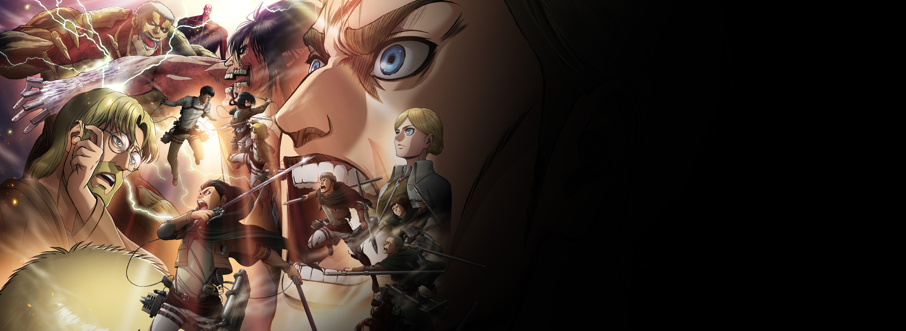
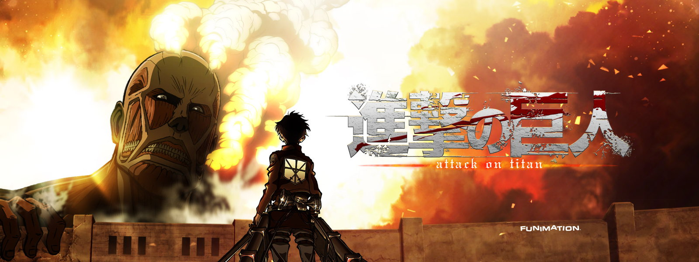

Shingeki no kyojin
Attack on titan (Tv series)

Attack on titan is a Japanese dark fantasy anime television series, adapted from the manga of the same
name by Hajime Isayama, that premiered on April 7, 2013. It has aired on NHK General TV in Japan,
and Aniplus Asia in various Asia-Pacific countries. In the United States and Canada, the series has
been streamed on Crunchyroll, Funimation, Netflix, Amazon Prime Video, and Hulu. Attack on Titan has
also aired on Adult Swim's Toonami programming block in the U.S.
Context

Set in a post-apocalyptic world where the remains of humanity live behind walls protecting them
from giant humanoid Titans, Attack on Titan follows protagonist Eren Jaeger, along with friends
Mikasa Ackerman and Armin Arlert. When a Colossal Titan breaches the wall of their hometown, Titans
destroy the city and eat Eren's mother. Vowing vengeance, Eren joins the elite Survey Corps, a group
of soldiers who fight against Titans. Attack on Titan chronicles Eren's journey with the Survey Corps
as they fight against the Titans while investigating their origin and history.